Los primeros minutos cuentan: adquisición forense en escenas del crimen digital.
Parte I. Adquisición de evidencia.
El equipo de trabajo de fuerzas del orden lo ha designado como investigador forense digital, como primer respondiente deberá adquirir la evidencia forense en el sistema en caliente Windows que ha sido comprometido.
Instrucciones: Detalle el proceso a través del informe ejecutivo, dónde deberá explicar la utilización de cada uno de los comandos de adquisición, así como el resultado de este.
Cada uno de los comandos a continuación mostrados pueden concatenarse con el símbolo mayor que espacio y escoger un nombre con la extensión .txt para guardar lo mostrado en pantalla para posteriores análisis ejemplo date > fechayhora.txt
- Obtenga la fecha y hora del sistema.
date
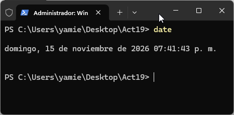
Comando simple que nos muestra hora y fecha que tiene configurado el sistema en este momento. - Obtenga un listado de los procesos en ejecución. tasklist
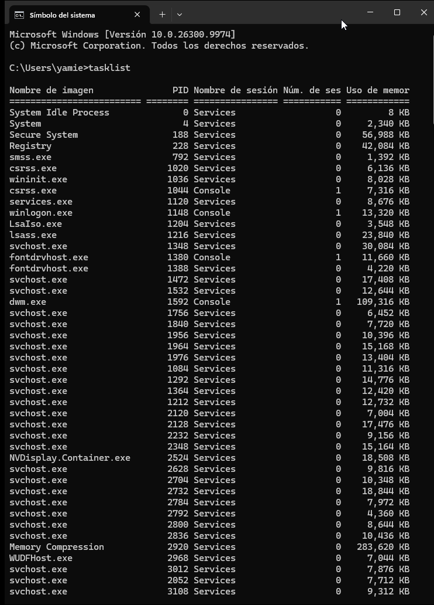
Este comando muestra: El nombre de la imagen, el PID (Identificador de Proceso), el nombre de la sesión, el número de sesión y el uso de memoria del sistema y tiene opciones para ver solo el PID indicado. - Obtenga los servicios del dispositivo de análisis desde el símbolo del sistema y después
desde Powershell, ¿Qué diferencias aprecia? ¿Cuál es su análisis respecto al resultado?
El comando es diferente y la información que nos muestra incluye nuevos parámetros
como tiempo de uso de CPU y uso de memoria física WS. Get-Process
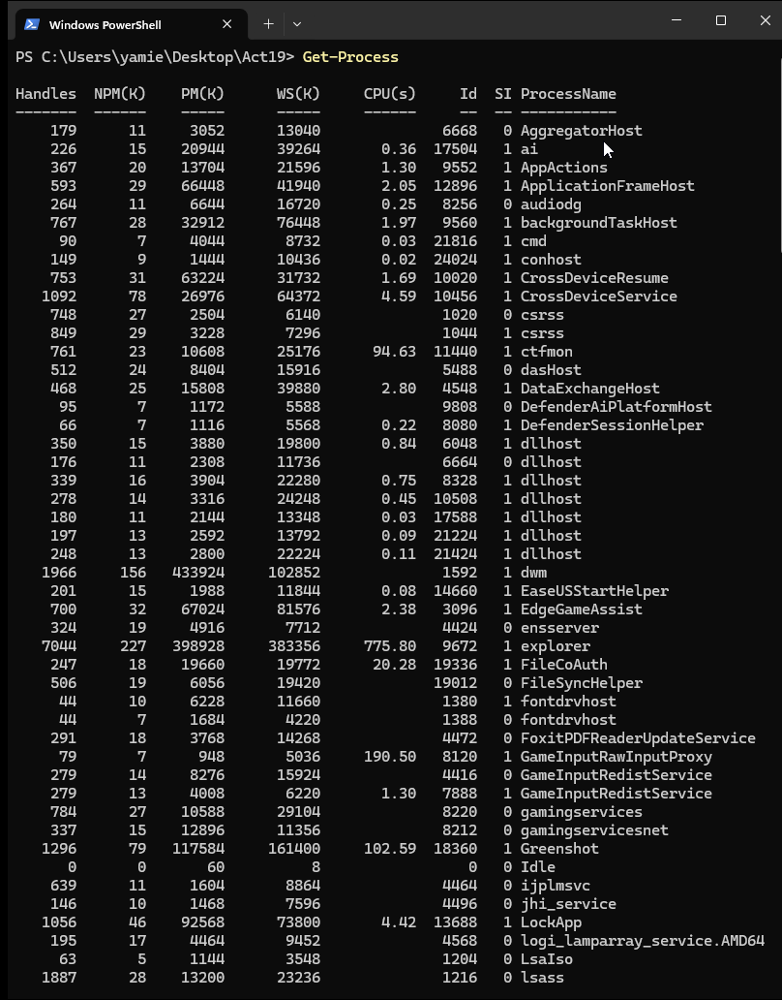
- Obtenga un listado de los usuarios que se encuentran actualmente logueados en el
sistema comprometido.
.\NetUsers.exe /local
Esta herramienta personalizada nos indica los usuarios locales que están activos dentro de nuestro sistema.
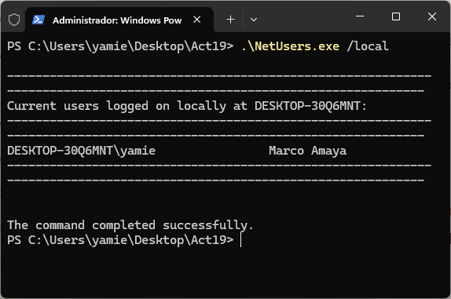
- Obtenga un listado de los usuarios que alguna vez se loguearon en el sistema
comprometido.
.\NetUsers.exe /history /local
Aquí pueden aparecer usuarios borrados que alguna vez fueron parte del sistema local.
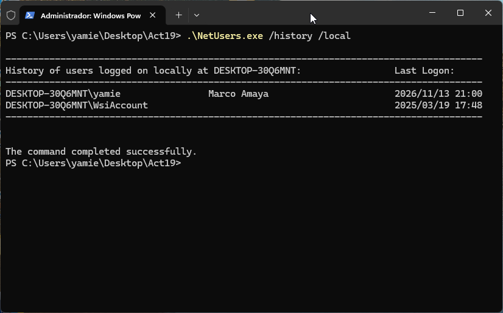
- Obtenga la información de la red del sistema comprometido.
Ipconfig /all
La información más completa para el diagnóstico revisión de configuración de la red de nuestro sistema.
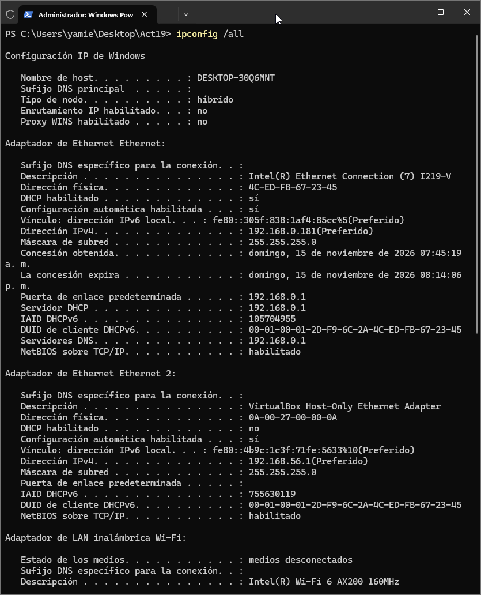
- Identifique los nombres asignados por NetBIOS en el sistema comprometido.
nbtstat -n
Su función es mostrar la tabla de nombres NetBIOS locales que el equipo ha registrado en la red local incluyendo el nombre del host, el grupo de trabajo y los sufijos numéricos que identifican servicios activos.
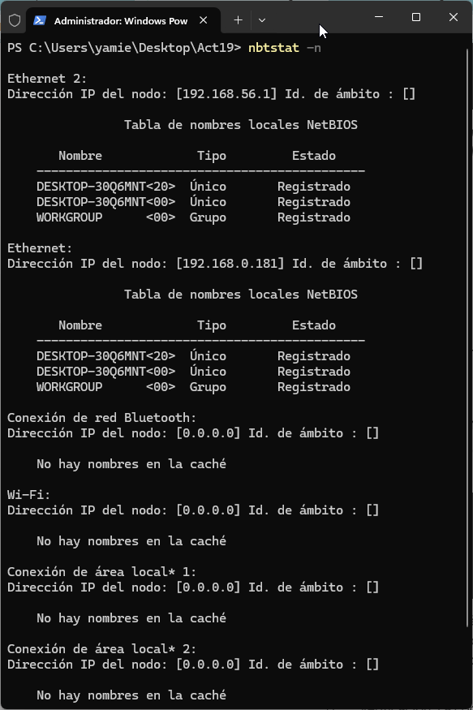
- Obtenga las conexiones establecidas en el sistema vulnerado.
netstat -ano | findstr ESTABLISHED
Muestra todas las conexiones y puertos en escucha, las direcciones y números de puerto en formato numérico y filtra solo las establecidas.
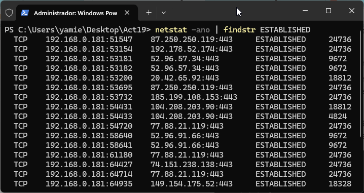
- Obtenga la relación de las aplicaciones abiertas con el puerto de comunicación establecido
en el sistema comprometido.
netstat -bno
Al cambiar la opción -b nos incluye el nombre de la aplicación.
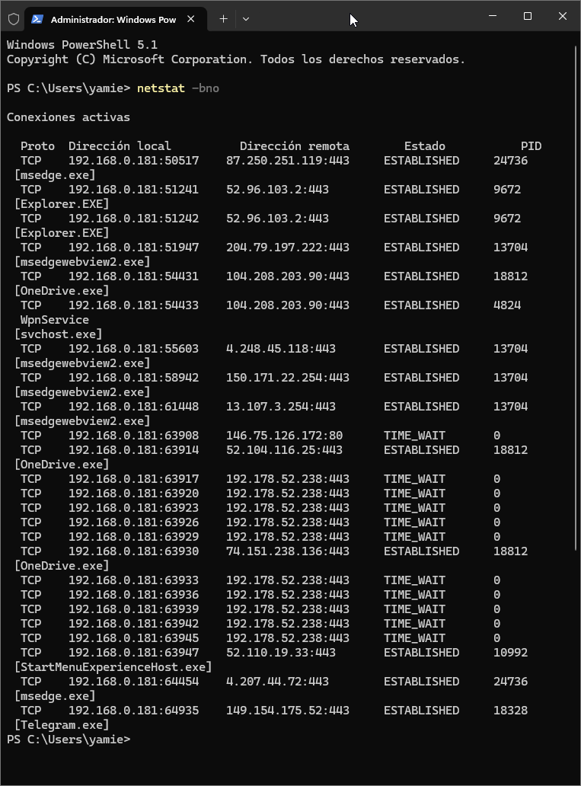
- Identifique los dominios a los que se ha accedido desde el ordenador en investigación.
ipconfig /displaydns
Muestra el cache del cliente dns.
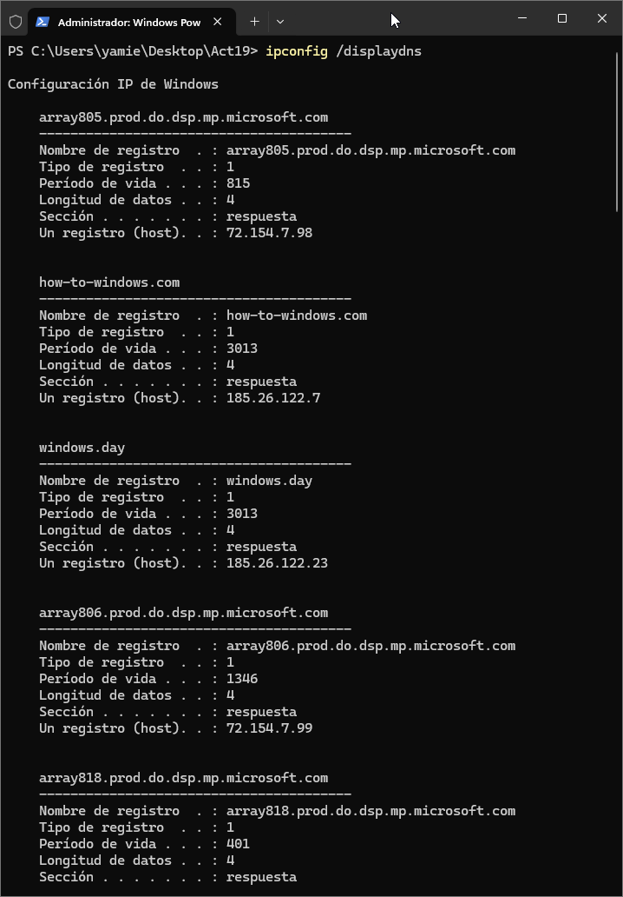
- Obtenga la información almacenada de comunicación entre la dirección física y la
dirección lógica del equipo con los que se haya comunicado recientemente el dispositivo
en investigación.
arp -a
Muestra el contenido de la cache de arp que es un protocolo que traduce direcciones lógicas a direcciones físicas.
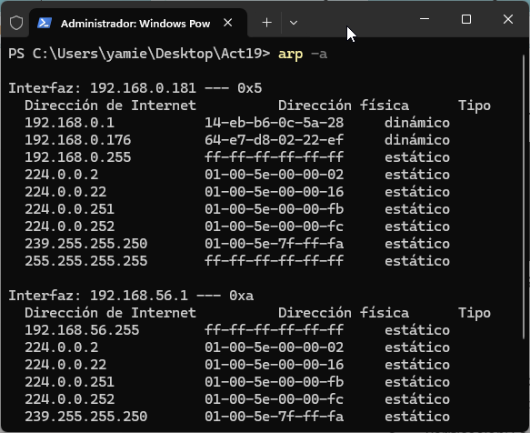
- Obtenga un listado de redes WiFi a las que se ha conectado el equipo comprometido.
netsh wlan show profiles
Muestra los perfiles o reses inalámbricas guardadas en nuestro sistema.
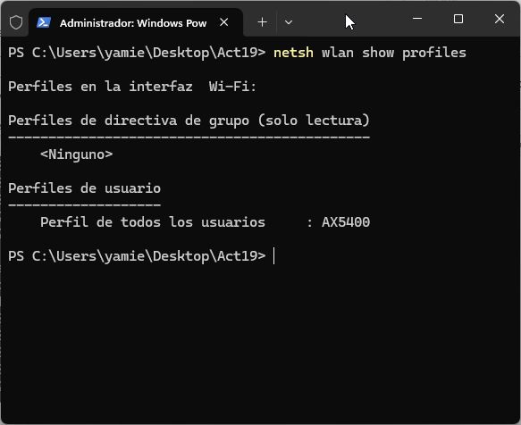
- Recabe el histórico del intérprete de comandos que se han ejecutado en el sistema de
análisis.
Get-History
Muestra el listado de comandos que se han ejecutado en el sistema.
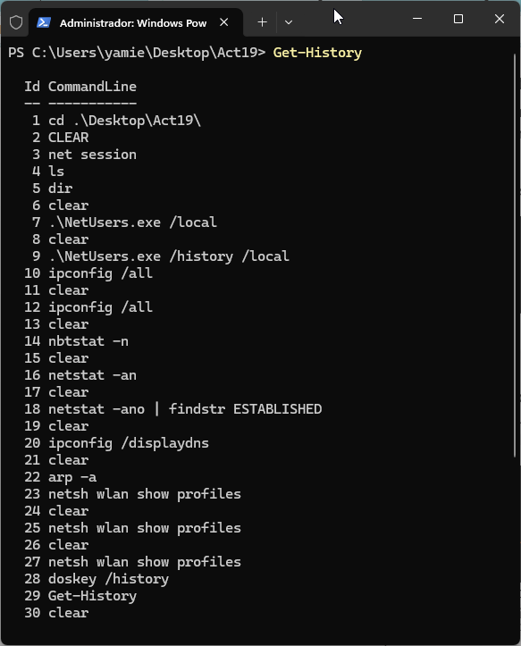
- Visualice las unidades mapeadas en el sistema de investigación.
net use
Un listado de todas las unidades de red mapeadas actualmente en la sesión del usuario, indicando la letra de unidad asignada sin embargo al no tener una de estas nos arroja la siguiente información.
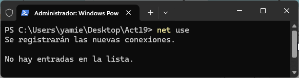
- Obtenga los recursos compartidos del sistema en análisis.
net share
Un listado en formato de tabla con todos los recursos que actualmente están compartidos en el equipo.
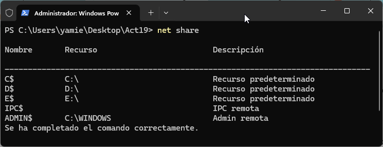
- Obtenga la información relacionada del equipo comprometido.
systeminfo
Recopila y muestra un resumen detallado y exhaustivo de la configuración del sistema operativo, el hardware, la memoria y el entorno de red del sistema.
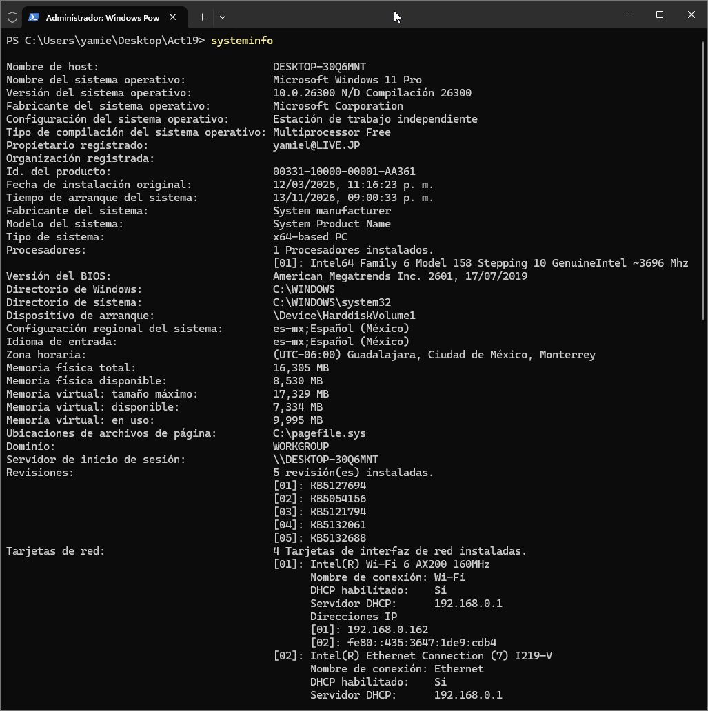
- Recupere las tareas programadas en el sistema operativo de análisis.
schtask /query
Consulta y audita todas las tareas programadas y registradas en el sistema.
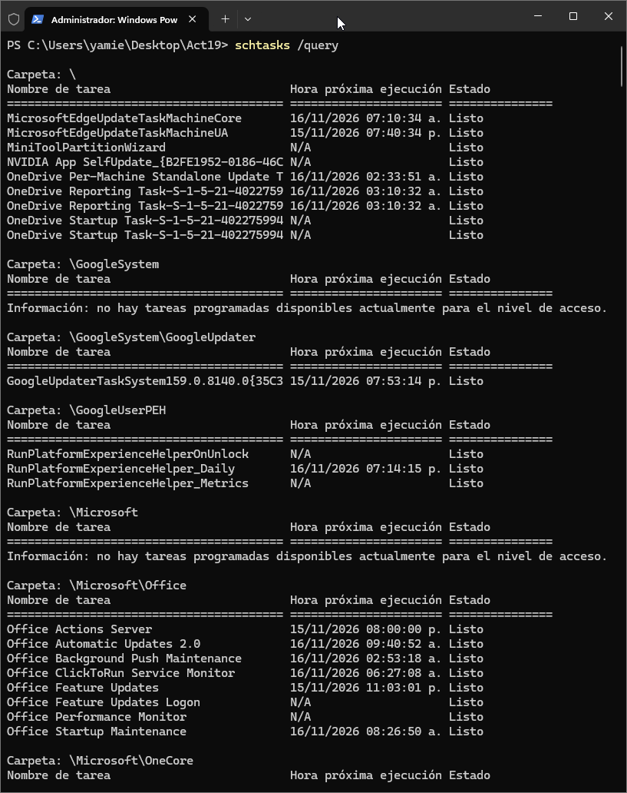
- Exporte los logs de los registros del sistema para su posterior análisis en la ubicación de
Escritorio del usuario en investigación.
wevtutil epl System “%USERPROFILE%\Desktop\Act19\System.evtx”
Administra, consulta y respalda los registros de eventos del sistema.
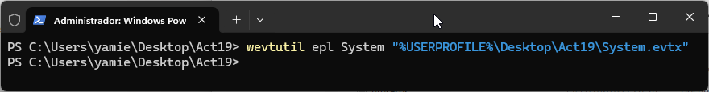
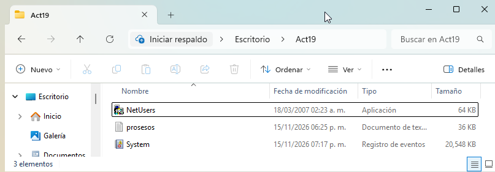
- Obtenga el fichero Host del sistema comprometido para su posterior análisis.
type C:\Windows\System32\drivers\etc\hosts
El archivo hosts es un documento de texto plano que el sistema operativo utiliza para resolver nombres de dominio antes de consultar a cualquier servidor DNS externo.
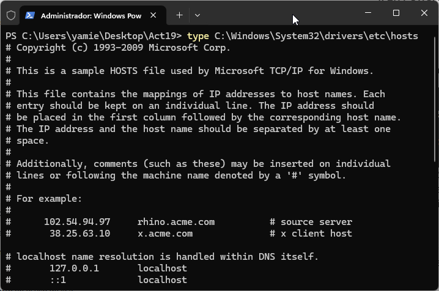
- Obtenga el listado con base a la fecha de creación del árbol de directorios y ficheros del
sistema operativo comprometido.
dir /s /t:c /o:d
dir: El comando nativo del Símbolo del sistema para listar archivos y carpetas.
/s (Subdirectorios): Obliga al comando a recorrer de manera recursiva todas las subcarpetas contenidas en la ruta especificada, mapeando todo el árbol de directorios.
/t:c (Time Created): Modifica la marca de tiempo que utiliza el comando.
/o:d (Order by Date): Ordena los resultados según la marca de tiempo seleccionada.
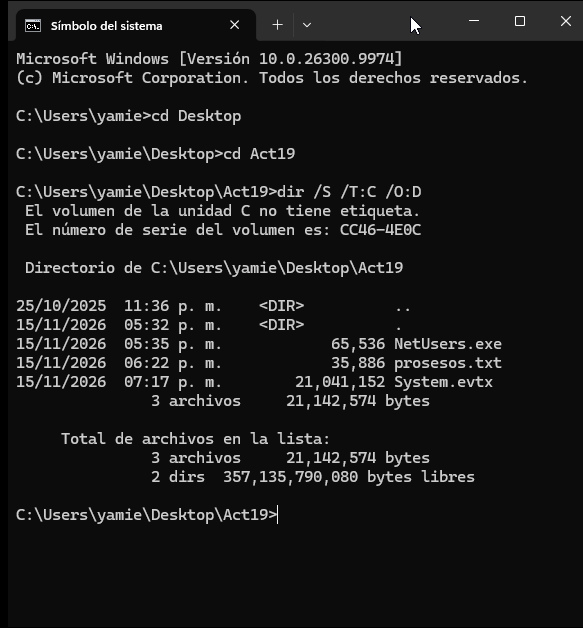